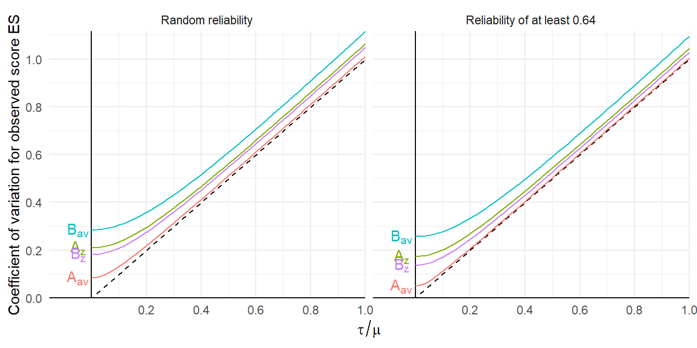

Meta-analyses in education, psychology, and related fields rely heavily of Cohen’s \(d\), or the standardized mean difference effect size, for quantitatively describing the magnitude and direction of intervention effects. In these fields, Cohen’s \(d\) is so pervasive that its use is nearly automatic, and analysts rarely question its utility or consider alternatives (response ratios, anyone? POMP?). Despite this state of affairs, working with Cohen’s \(d\) is theoretically challenging because the standardized mean difference metric does not have a singular definition. Rather, its definition depends on the choice of the standardizing variance used in the denominator.
Meta-analyses in education, psychology, and related fields rely heavily of Cohen’s \(d\), or the standardized mean difference effect size, for quantitatively describing the magnitude and direction of intervention effects. In these fields, Cohen’s \(d\) is so pervasive that its use is nearly automatic, and analysts rarely question its utility or consider alternatives (response ratios, anyone? POMP?). Despite this state of affairs, working with Cohen’s \(d\) is theoretically challenging because the standardized mean difference metric does not have a singular definition. Rather, its definition depends on the choice of the standardizing variance used in the denominator.1
In this post, I’m going to mull over how measurement error and design decisions influence the metric definition of Cohen’s \(d\) in basic within-group experimental designs. The distorting effects of measurement error has long been a source of concern within psychometric meta-analysis, a perspective associated with the work of Frank Schmidt and Jack Hunter, and measurement-error corrections are well developed and often applied in meta-analyses of correlations. Straight-forward measurement-error corrections have also been described for Cohen’s \(d\) from between-group designs (see recent work by Brenton Wiernik and Jeff Dahlke). However, I have literally never seen a meta-analytic application that applied these corrections and I have thus far been unable to locate work on such corrections specifically for effect sizes in within-group designs.2 So, time to muck about…
Effect size definitions in within-group designs
In basic between-group designs, the only variances in the model are the within-group variances, so the choice of standardizing variance is limited to a) the singular population variance, assuming it is homogeneous across groups, b) the variance of one group, or c) the average of the variances in each group. In most applications, homogeneity is assumed (often without much reflection), version (a) of Cohen’s \(d\) is estimated, and the meta-analyst can go along their merry way. For sake of succinctness, I’ll call this effect size \(d_{b}\), where the \(b\) indicates the usual version for basic between-group designs.
For within-group or repeated measures designs, the set of choices is more involved and includes a) standardizing by the across-participant variance in one condition (or both conditions, assuming homogeneity) or b) standardizing by the variance of the difference scores. The former approach is sometimes called \(d_{av}\)3, the latter is called \(d_z\)4. The \(d_{av}\) metric uses the same standardizing variance as the \(d\) from a basic between-group design, and so results from both types of designs are, in principle, on the same scale.
In the context of meta-analysis, the comparability of \(d_b\) and \(d_{av}\) is useful when working with a set of studies that include both types of designs. On the other hand, in meta-analyses that consist solely of within-group or repeated measures designs, comparability with \(d_b\) may be less of a priority and one could consider using \(d_z\) for synthesis. Purely on a pragmatic level, using \(d_z\) might be attractive because the only pieces of information needed to calculate it are the total sample size and the \(t\) statistic (or \(p\)-value) from the comparison between conditions. In contrast, calculating \(d_{av}\) also requires the between-participant standard deviations from one or both groups, which primary studies might not always report.
Going in to this exercise, I had the notion that measurement error would affect \(d_z\) to a greater degree than \(d_{av}\) because \(d_z\) involves difference scores and difference scores get hit by measurement error twice. Does this intuition hold up? Let me try to formalize things a bit.
A within-group design with measurement error
Suppose we have a within-group design involving two conditions, where participants are assessed on \(K\) trials under each condition. Let \(Y_{ijk}\) denote the outcome from trial \(k\) for participant \(j\) under condition \(i\), for \(i = 1,2\), \(j = 1,...,N\), and \(k = 1,...,K\). A basic model for this set-up is \[
Y_{ijk} = \mu_i + u_{ij} + e_{ijk}
\] where \(u_{1j}\) and \(u_{2j}\) are participant-specific errors in the true scores under each condition and the \(e_{ijk}\)’s are measurement errors. For simplicity, I will assume that:
the true-score variance is equal across conditions, with \(\Var(u_{ij}) = \sigma^2\) for \(i = 1,2\),
the true scores are correlated across conditions, \(\cor(u_{1j}, u_{2j}) = \rho\), and
measurement errors are uncorrelated and have homogeneous variance across conditions, with \(\Var(e_{ijk}) = \psi^2\).
Let \(\phi = \sigma^2 / (\sigma^2 + \psi^2)\) denote the reliability (intra-class correlation) of a single observed score. Note that we can write \(\psi^2\) in terms of the reliability and true-score variance as \(\psi^2 = \sigma^2 \times \frac{1 - \phi}{\phi}\).
Under this model, there are several different standardized mean difference metrics that we could consider. Since measurement reliability might vary from study to study, it would make sense to define the metric in terms of true score variances alone, as \[
\delta_{av} = \frac{\mu_2 - \mu_1}{\sigma}
\] or in terms of the variance of the difference in true scores, as \[
\delta_z = \frac{\mu_2 - \mu_1}{\sigma \sqrt{2(1 - \rho)}}.
\] However, we don’t directly observe the true scores, and we can’t estimate their variance unless we have information about score reliabilities. Thus, meta-analysts will usually need to calculate effect sizes in terms of observed scores that include measurement error.
Suppose that the analysis is conducted by taking the average of the \(K\) trials for each participant under each condition, \(\bar{Y}_{ij} = \frac{1}{K} \sum_{k=1}^K Y_{ijk}\), and conducting the analysis using these mean scores. The variance of the mean scores is \[
\Var(\bar{Y}_{ij}) = \sigma^2 \left(1 + \frac{1 - \phi}{\phi K}\right),
\] so we can define the observed-score standardized mean difference using raw score standardization as \[
\tilde\delta_{av} = \frac{\mu_2 - \mu_1}{\sigma \sqrt{1 + \frac{1 - \phi}{\phi K}}} = \frac{1}{\sqrt{1 + \frac{1 - \phi}{\phi K}}} \times \delta_{av}.
\] From this expression, we can see that measurement error attenuates the true-score effect size because the multiplier term is always going to be less than one.
Similarly, the variance of the observed difference scores is \[
\Var(\bar{Y}_{2j} - \bar{Y}_{1j}) =2 \sigma^2 \left(1 - \rho + \frac{1 - \phi}{\phi K}\right),
\] so we can define the observed-score standardized mean difference using change score standardization as \[
\tilde\delta_z = \frac{\mu_2 - \mu_1}{\sigma \sqrt{2 \left(1 - \rho + \frac{1 - \phi}{\phi K}\right)}} = \sqrt{\frac{1 - \rho}{1 - \rho + \frac{1 - \phi}{\phi K}}} \times \delta_z.
\] Again, we can see that measurement error attenuates the true-score effect size because the multiplier term is always going to be less than one. However, unlike with \(d_{av}\), the attenuation factor here depends on \(\rho\) in addition to \(\phi\) and \(K\). This additional term in the correction factor is one indication that \(d_z\) might be less desirable for meta-analysis. Correcting \(d_z\) for the distortion from measurement error would require estimates of both the true-score correlation and the reliability of the scores, whereas correcting \(d_{av}\) would require only the latter.
Meta-analysis
The relationships between the true-score effect sizes and the analogous observed score effect sizes starts to be a problem when we consider a meta-analysis of multiple primary studies. Primary studies will often use different instruments and procedures for measuring outcomes (necessitating the use of some standardized effect size), and those differences in instruments and procedures might come along with differences in score reliability as well as variation in the number of trials collected per condition (and plenty of other things, such as sample size, participant characteristics, etc.). Procedural heterogeneity like this creates two potential challenges for meta-analysis: bias in average effect sizes and extra heterogeneity in the distribution of effect sizes. Both could make findings from a meta-analysis more difficult to interpret, although I will argue that extra heterogeneity is more concerning than bias.
To illustrate, let’s now imagine that the parameters of the within-group study design, \(\delta_{av}\) or \(\delta_z\), \(\rho\), \(\phi\), and \(K\) are random variables, drawn from the distribution of parameters across a population of hypothetical studies.
A model for \(\delta_{av}\)
Let’s first consider \(\delta_{av}\) and assume that it follows a random effects model, with \[
\delta_{av} \sim N\left(\mu, \tau^2\right).
\] Let’s also assume that the remaining parameters \(\rho\), \(\phi\), and \(K\) are independent of \(\delta_{av}\). These parameters determine the attenuation factor \(A_{av} = \left(1 + \frac{1 - \phi}{\phi K}\right)^{-1/2}\), which relates the observed-score effect size parameter to the true score effect size parameter.
The bias of \(\tilde\delta_{av}\) is therefore \[
\E\left(\tilde\delta_{av}\right) = \E\left(A_{av}\delta_{av}\right) = \E(A_{av}) \times \mu.
\] Thus, under my very simplistic assumptions, a meta-analysis of observed score Cohen’s \(d_{av}\) estimates will be biased (downward) for the overall average effect in the true-score distribution.
You might find that the downward bias in \(\tilde\delta_{av}\) is undesirable. On the other hand, bias might not be as a big a problem as it first seems. If all of the observed-score effect sizes are biased to a degree that is unrelated to the true effects, then bias just stretches or compresses the scale of measurement, but doesn’t necessarily lead to interpretive problems. Imagine you have a ruler that is half an inch too short, and you’re trying to compare the heights of different objects. As long as you use the same ruler, then you will still be able to determine which objects are bigger and which are smaller, and by how much, even if the measurements are off in an absolute sense.
Apart from bias, however, variability in \(A_{av}\) will also induce additional heterogeneity in the distribution of observed score effect sizes. This is a clear problem because it creates additional uncertainty, making it harder to draw inferences about the distribution of effects, predict new effect sizes, or identify substantively interesting moderators. To measure this additional heterogeneity and keep its consequences separate from the consequences for bias, I will look at the coefficient of variation in \(\tilde\delta_{av}\). Under the assumption that \(A_{av}\) is independent of \(\delta_{av}\), \[
\frac{\sqrt{\Var(\tilde\delta_{av})}}{\E(\tilde\delta_{av})} = \frac{\sqrt{(\mu^2 + 2 \tau^2) \Var(A_{av}) + \tau^2 \left[\E(A_{av})\right]^2}}{\E\left(A_{av} \right) \times \mu } = \sqrt{\left[\left(1 + \frac{2 \tau^2}{\mu^2}\right) \frac{\Var(A_{av})}{\left[\E\left(A_{av} \right)\right]^2} + \frac{\tau^2}{\mu^2}\right]}.
\] Thus, the coefficient of variation for \(\tilde\delta_{av}\) is amplified by a factor that depends on the squared coefficient of variation of \(A_{av}\). Under the same model, \(\tilde\delta_z = A_z \times \delta_{av}\), where \(A_z = \left(1 - \rho + \frac{1 - \phi}{\phi K}\right)^{-1/2}\), and so \(\E(\tilde\delta_z) = \E(A_z) \times \mu\) and \[
\frac{\sqrt{\Var(\tilde\delta_z)}}{\E(\tilde\delta_z)} = \sqrt{\left[\left(1 + \frac{2 \tau^2}{\mu^2}\right) \frac{\Var(A_z)}{\left[\E\left(A_z \right)\right]^2} + \frac{\tau^2}{\mu^2}\right]}.
\]
To see what’s going on here, let’s consider some specific distributions for these measurement factors. First, let’s assume:
\(\rho \sim B(14, 6)\), so that \(\E(\rho) = .7\) and \(\Var(\rho) = 0.1^2\);
\(\phi \sim B(3, 5)\), so that \(\E(\rho) = .0.375\) and \(\Var(\rho) = 0.161^2\);
\(K \sim 1 + Pois(9)\), so \(\E(K) = 10\) and \(\Var(K) = 3^2\); and
\(\rho\), \(\phi\), and \(K\) are mutually independent and independent of \(\delta_{av}\).
Below I simulate 50000 samples from these distributions and calculate \(A_{av}\) and \(A_z\).
The distribution of \(A_{av}\) is mostly concentrated around the mean of \(E(A_{av}) = 0.898\), with a coefficient of variation of \(CV(A_{av}) = 0.085\). In contrast, the distribution of \(A_{av}\) has a mean very close to one, \(E(A_z) = 1.006\) but a coefficient of variation of \(CV(A_z) = 0.21\), about 2.5 times larger. Thus, variation in measurement procedure induces more extra heterogeneity into the distribution of \(\tilde\delta_z\) than into \(\tilde\delta_{av}\).
Now, one potential objection to this hypothetical scenario is that researchers do not choose the number of trials at random, without consideration for the other parameters of the study design. A more realistic assumption might be that researchers choose \(K\) to ensure they achieve at least some threshold level of reliability for the observed scores. The reliability of the observed scores is \(A_{av}^2\), so ensuring some threshold of reliability is equivalent to ensuring the square root of the threshold for \(A_{av}\). Let’s suppose that researchers always ensure \(A_{av} \geq 0.8\) so that reliability is always at least \(0.64\). This leads to the following distributions for \(A_{av}\) and \(A_z\):
The distribution of \(A_{av}\) loses its left tail, so that its mean is \(E(A_{av}|A_{av} \geq 0.8) = 0.917\) and its coefficient of variation is reduced to \(CV(A_{av} | A_{av} \geq 0.8) = 0.049\). The distribution of \(A_{av}\) now has a mean of \(E(A_z | A_{av} \geq 0.8) = 1.045\) and a coefficient of variation of \(CV(A_z | A_{av} \geq 0.8) = 0.173\), about 3.5 times larger than the squared coefficient of variation of \(A_{av}\).
Under both of these scenarios, the observed-score \(\tilde\delta_z\) is substantially more sensitive to procedural heterogeneity than is \(\tilde\delta_{av}\). Based on this model and hypothetical example, it seems clear \(\tilde\delta_{av}\) should be preferred over \(\tilde\delta_z\) as a metric for meta-analysis. However, these relationships are predicated on a certain model for the study-specific parameters. One might object to this model because there’s a sense that we have assumed that \(\delta_{av}\) is the right answer. After all, the underlying effect size model is specified in terms of \(\delta_{av}\), and the design parameters—including \(\rho\) in particular—are treated as noise, uncorrelated with \(\delta_{av}\). What happens to the observed-score metrics \(\tilde\delta_z\) and \(\tilde\delta_{av}\) if we instead start with a model specified in terms of \(\delta_z\)?
A model for \(\delta_z\)
Let’s now see how this works if we treat \(\delta_z\) as the correct metric and assume that the design parameters are independent of \(\delta_z\). Assume that \[
\delta_z \sim N(\alpha, \omega^2)
\] and that the remaining parameters \(\rho\), \(\phi\), and \(K\) are independent of \(\delta_{av}\). Then the observed-score standardized mean difference using change score standardization can be written as \(\tilde\delta_z = B_z \times \delta_z\), where \[
B_z = \sqrt{\frac{1 - \rho}{1 - \rho + \frac{1 - \phi}{\phi K}}}
\] and the observed-score standardized mean difference using raw score standardization can be written as \(\tilde\delta_{av} = B_{av} \times \delta_z\), where \[
B_{av} = \frac{\sqrt{2}(1 - \rho)}{\sqrt{1 - \rho + \frac{1 - \phi}{\phi K}}}.
\] The plots below show the distribution of \(B_z\) and \(B_{av}\) under the same scenarios considered above. First, the scenario where observed-score reliability is not controlled:
The tables are now more or less turned. Under both reliability scenarios, \(B_z\) has a lower coefficient of variation than \(B_{av}\), indicating that \(\tilde\delta_z\) is less affected by procedural heterogeneity than is \(\tilde\delta_{av}\). However, \(\tilde\delta_z\) is still affected in absolute terms, considering that the coefficient of variation for \(B_z\) is about 79% of the coefficient of variation for \(A_z\). Of course, \(\tilde\delta_{av}\) is quite strongly affected under this model, with a coefficient of variation of 0.257.
Consequences for heterogeneity
To make these results a bit more concrete, it’s useful to consider think in terms of heterogeneity of the observed score effect sizes. The figure below plots the CVs of observed-score effect size parameters as a function of the CVs of the true effect size distribution.
Code
library(tidyr)library(stringr)CV_obs <- CVs |>select(-A_ratio, -B_ratio) |>pivot_longer(-reliability, names_to ="metric", values_to ="het") |>expand_grid(tau_mu =seq(0,1,0.02)) |>mutate(reliability =recode(reliability, 'at least 0.64'="Reliability of at least 0.64", 'random'="Random reliability"),metric =paste0(str_replace(metric, "\\_","\\["),"]"),CV =sqrt((1+2* tau_mu^2) * het^2+ tau_mu^2) )CV_ex <- CV_obs |>filter(tau_mu ==0.5, reliability =="Reliability of at least 0.64") |>select(metric, CV) |>mutate(CV =round(CV, 3),metric =str_replace(str_sub(metric, 1, -2), "\\[", "_") ) |>pivot_wider(names_from = metric, values_from = CV)CV_obs_labs <- CV_obs %>%filter(tau_mu ==0)ggplot(CV_obs, aes(tau_mu, CV, color = metric)) +facet_wrap(vars(reliability)) +scale_x_continuous(expand =expansion(c(0.1,0),0), breaks =seq(0.2, 1, 0.2)) +scale_y_continuous(expand =expansion(0,0), breaks =seq(0, 1, 0.2)) +geom_vline(xintercept =0) +geom_hline(yintercept =0) +geom_abline(slope =1, linetype ="dashed") +geom_text(data = CV_obs_labs, aes(x = tau_mu, y = CV, color = metric, label = metric),nudge_x =-0.05,parse =TRUE ) +geom_line() +theme_minimal() +labs(x =expression(tau / mu), y ="Coefficient of variation for observed score ES") +theme(legend.position ="none")

Consider, for instance, a scenario where observed-score reliability is always at least 0.64 and \(\tau / \mu = 0.5\), which would be the case if effect sizes are normally distributed and about 97% of effect sizes are positive. Under the effect size model based on \(\delta_{av}\), the observed-score \(\tilde\delta_{av}\) is hardly affected by measurement heterogeneity at all, with a CV of 0.504 but the CV of the observed-score \(\tilde\delta_z\) is 0.543. Under the effect size model based on \(\delta_{av}\), the observed-score \(\tilde\delta_{av}\) is strongly affected by measurement heterogeneity, with a CV of 0.591; in comparison, the CV of the observed-score \(\tilde\delta_z\) of 0.528. Under both models, these increases in CV are effectively constant for larger values of \(\tau / \mu\).
So what’s your point?
Unfortunately, this particular trip down a rabbit hole doesn’t seem to yield many clear take-aways. For the scenario that I looked at here, the preferred choice of effect size metric is apparently driven by what assumptions we find more plausible. If we think the more plausible model is the one in which \(\rho\) is independent of \(\delta_{av}\), then \(\tilde\delta_{av}\) is less strongly affected by measurement variation and therefore preferred. Further, the attenuation in \(\tilde\delta_{av}\) depends only on \(\phi\), which might mean that a correction for attenuation is more feasible. However, if we think the more plausible model is the one in which \(\rho\) is independent of \(\delta_z\), then \(\tilde\delta_z\) is less strongly affected by measurement variation and therefore preferred.5 In the latter model, one caveat is that the measurement error attenuation in \(\tilde\delta_z\) is still a complicated mess, depending on both the true score correlation \(\rho\) and the reliability \(\phi\). This would make it pretty hard to implement some sort of correction for attenuation.
So, how could one decide which meta-analytic model is more plausible in a given application? On a conceptual level, I would argue that the model for \(\delta_{av}\) would tend to be more plausible in meta-analyses where there is more operational variation in the interventions examined. I would venture that syntheses that include many different versions of an intervention would tend to have a wider range of correlations between true scores (i.e., more heterogeneous correlations between potential outcomes), even holding the outcome measurement procedures constant. This doesn’t necessarily justify the assumption that \(\rho\) is independent of \(\delta_{av}\), but it does make it seem rather implausible that \(\delta_z\) would be independent of \(\rho\).
On a more practical level, it seems like there are a few empirical things that a meta-analyst could do to inform a choice between a model for \(\delta_{av}\) and one for \(\delta_z\). Pragmatically, one could calculate both effect size metrics and just see which one exhibits more heterogeneity. All else equal, it seems reasonable to prefer the metric that has less heterogeneity. One could also try to gather data on the correlation between observed scores, on the reliability of the observed scores, and on the number of trials used in each study. With this information, one could construct measurement-related predictors and use them in a meta-regression to explain variation in the observed effect size estimates. Alternately, one could use the formulas given above to implement attenuation corrections for the effect sizes and see if this leads to reduced heterogeneity. How well would any of these approaches actually work? Answering that question would take some further, more careful and systematic investigation.
Perhaps because use of Cohen’s \(d\) is so under-scrutinized in practice, methodologists have spent many an afternoon blogging about this problem. For general discussions about issues with how to define Cohen’s \(d\), see excellent posts from Jan Vanhove (with a sequel), Jake Westfall, Uri Simonsohn, and Pierre Dragicevic; a more formal discussion by Thom Baguley; and some very interesting work on alternative conceptualizations by Tony Ades and colleagues. I can promise, dear reader, that the present blog post will not be nearly as cogent as these contributions—this is more about getting my own thoughts straight than making any recommendations—and so caveat lector applies.↩︎
I would love to be corrected on both of these points. Please drop a comment or email me with suggested reading.↩︎
When the standardizing variance is calculated using measurements from only one condition (i.e., the pre-test in a repeated measures design), this version of \(d\) corresponds to measure = "SMCR", the “standardized mean change using raw score standardization” in metafor::escalc.↩︎
This version of \(d\) corresponds to measure = "SMCC", the “standardized mean change using change score standardization” in metafor::escalc.↩︎
And of course, these two models are not the only alternatives—one could look at intermediate scenarios where \(\rho\) and \(\phi\) are more or less strongly correlated with the true score effect sizes.↩︎
@online{pustejovsky2023,
author = {Pustejovsky, James E.},
title = {Cohen’s \$d\_z\$ Makes Me Dizzy When Considering Measurement
Error},
date = {2023-02-17},
url = {https://mellifluous-buttercream-e2edd2.netlify.app/posts/dizzy-for-d-z},
langid = {en}
}
---title: Cohen's $d_z$ makes me dizzy when considering measurement errordate: '2023-02-17'categories:- effect size- standardized mean difference- design-comparable SMD- measurement-errordescription: Meta-analyses in education, psychology, and related fields rely heavily of Cohen's $d$, or the standardized mean difference effect size, for quantitatively describing the magnitude and direction of intervention effects. In these fields, Cohen's $d$ is so pervasive that its use is nearly automatic, and analysts rarely question its utility or consider alternatives (response ratios, anyone? POMP?). Despite this state of affairs, working with Cohen's $d$ is theoretically challenging because the standardized mean difference metric does not have a singular definition. Rather, its definition depends on the choice of the standardizing variance used in the denominator.code-fold: truecode-tools: truetoc: true---```{r, echo = FALSE}knitr::opts_chunk$set(warning = FALSE, message = FALSE)```Meta-analyses in education, psychology, and related fields rely heavily of Cohen's $d$, or the standardized mean difference effect size, for quantitatively describing the magnitude and direction of intervention effects. In these fields, Cohen's $d$ is so pervasive that its use is nearly automatic, and analysts rarely question its utility or consider alternatives (response ratios, anyone? POMP?). Despite this state of affairs, working with Cohen's $d$ is theoretically challenging because the standardized mean difference metric does not have a singular definition. Rather, its definition depends on the choice of the standardizing variance used in the denominator.[^blogroll]$$\def\Pr{{\text{Pr}}}\def\E{{\text{E}}}\def\Var{{\text{Var}}}\def\Cov{{\text{Cov}}}\def\cor{{\text{cor}}}\def\bm{\mathbf}\def\bs{\boldsymbol}$$[^blogroll]: Perhaps because use of Cohen's $d$ is so under-scrutinized in practice, methodologists have spent many an afternoon blogging about this problem. For general discussions about issues with how to define Cohen's $d$, see excellent posts from [Jan Vanhove](https://janhove.github.io/reporting/2015/02/05/standardised-vs-unstandardised-es) (with [a sequel](https://janhove.github.io/design/2015/03/16/standardised-es-revisited)), [Jake Westfall](http://jakewestfall.org/blog/index.php/2016/03/25/five-different-cohens-d-statistics-for-within-subject-designs/), [Uri Simonsohn](http://datacolada.org/33), and [Pierre Dragicevic](https://transparentstatistics.org/2018/07/05/meanings-effect-size/); a more formal discussion by [Thom Baguley](https://www.floppybunny.org/robin/web/virtualclassroom/stats/basics/articles/effect_size/effect_size_baguley_2009.pdf); and some very interesting work on alternative conceptualizations by [Tony Ades and colleagues](https://doi.org/10.1002/jrsm.1130). I can promise, dear reader, that the present blog post will not be nearly as cogent as these contributions---this is more about getting my own thoughts straight than making any recommendations---and so _caveat lector_ applies. In this post, I'm going to mull over how measurement error and design decisions influence the metric definition of Cohen's $d$ in basic within-group experimental designs. The distorting effects of measurement error has long been a source of concern within psychometric meta-analysis, a perspective associated with the work of [Frank Schmidt and Jack Hunter](https://methods.sagepub.com/book/methods-of-meta-analysis-3e), and measurement-error corrections are well developed and often applied in meta-analyses of correlations. Straight-forward measurement-error corrections have also been described for Cohen's $d$ from between-group designs (see recent work by [Brenton Wiernik and Jeff Dahlke](https://psyarxiv.com/9mpbn/)). However, I have literally never seen a meta-analytic application that applied these corrections and I have thus far been unable to locate work on such corrections specifically for effect sizes in within-group designs.[^comment] So, time to muck about...[^comment]: I would _love_ to be corrected on both of these points. Please drop a comment or email me with suggested reading.## Effect size definitions in within-group designsIn basic between-group designs, the only variances in the model are the within-group variances, so the choice of standardizing variance is limited to a) the singular population variance, assuming it is homogeneous across groups, b) the variance of one group, or c) the average of the variances in each group. In most applications, homogeneity is assumed (often without much reflection), version (a) of Cohen's $d$ is estimated, and the meta-analyst can go along their merry way. For sake of succinctness, I'll call this effect size $d_{b}$, where the $b$ indicates the usual version for basic between-group designs.For within-group or repeated measures designs, the set of choices is more involved and includes a) standardizing by the across-participant variance in one condition (or both conditions, assuming homogeneity) or b) standardizing by the variance of the difference scores. The former approach is sometimes called $d_{av}$[^SMCR], the latter is called $d_z$[^SMCC]. The $d_{av}$ metric uses the same standardizing variance as the $d$ from a basic between-group design, and so results from both types of designs are, in principle, on the same scale. [^SMCR]: When the standardizing variance is calculated using measurements from only one condition (i.e., the pre-test in a repeated measures design), this version of $d$ corresponds to `measure = "SMCR"`, the "standardized mean change using raw score standardization" in `metafor::escalc`.[^SMCC]: This version of $d$ corresponds to `measure = "SMCC"`, the "standardized mean change using change score standardization" in `metafor::escalc`.In the context of meta-analysis, the comparability of $d_b$ and $d_{av}$ is useful when working with a set of studies that include both types of designs. On the other hand, in meta-analyses that consist solely of within-group or repeated measures designs, comparability with $d_b$ may be less of a priority and one could consider using $d_z$ for synthesis. Purely on a pragmatic level, using $d_z$ might be attractive because the only pieces of information needed to calculate it are the total sample size and the $t$ statistic (or $p$-value) from the comparison between conditions. In contrast, calculating $d_{av}$ also requires the between-participant standard deviations from one or both groups, which primary studies might not always report.Going in to this exercise, I had the notion that measurement error would affect $d_z$ to a greater degree than $d_{av}$ because $d_z$ involves difference scores and difference scores get hit by measurement error twice. Does this intuition hold up? Let me try to formalize things a bit.## A within-group design with measurement errorSuppose we have a within-group design involving two conditions, where participants are assessed on $K$ trials under each condition. Let $Y_{ijk}$ denote the outcome from trial $k$ for participant $j$ under condition $i$, for $i = 1,2$, $j = 1,...,N$, and $k = 1,...,K$. A basic model for this set-up is $$Y_{ijk} = \mu_i + u_{ij} + e_{ijk}$$where $u_{1j}$ and $u_{2j}$ are participant-specific errors in the true scores under each condition and the $e_{ijk}$'s are measurement errors. For simplicity, I will assume that: * the true-score variance is equal across conditions, with $\Var(u_{ij}) = \sigma^2$ for $i = 1,2$, * the true scores are correlated across conditions, $\cor(u_{1j}, u_{2j}) = \rho$, and * measurement errors are uncorrelated and have homogeneous variance across conditions, with $\Var(e_{ijk}) = \psi^2$. Let $\phi = \sigma^2 / (\sigma^2 + \psi^2)$ denote the reliability (intra-class correlation) of a single observed score. Note that we can write $\psi^2$ in terms of the reliability and true-score variance as $\psi^2 = \sigma^2 \times \frac{1 - \phi}{\phi}$.Under this model, there are several different standardized mean difference metrics that we could consider. Since measurement reliability might vary from study to study, it would make sense to define the metric in terms of true score variances alone, as$$\delta_{av} = \frac{\mu_2 - \mu_1}{\sigma}$$or in terms of the variance of the difference in true scores, as $$\delta_z = \frac{\mu_2 - \mu_1}{\sigma \sqrt{2(1 - \rho)}}.$$However, we don't directly observe the true scores, and we can't estimate their variance unless we have information about score reliabilities. Thus, meta-analysts will usually need to calculate effect sizes in terms of _observed_ scores that include measurement error. Suppose that the analysis is conducted by taking the average of the $K$ trials for each participant under each condition, $\bar{Y}_{ij} = \frac{1}{K} \sum_{k=1}^K Y_{ijk}$, and conducting the analysis using these mean scores. The variance of the mean scores is $$\Var(\bar{Y}_{ij}) = \sigma^2 \left(1 + \frac{1 - \phi}{\phi K}\right), $$so we can define the observed-score standardized mean difference using raw score standardization as$$\tilde\delta_{av} = \frac{\mu_2 - \mu_1}{\sigma \sqrt{1 + \frac{1 - \phi}{\phi K}}} = \frac{1}{\sqrt{1 + \frac{1 - \phi}{\phi K}}} \times \delta_{av}.$$From this expression, we can see that measurement error attenuates the true-score effect size because the multiplier term is always going to be less than one. Similarly, the variance of the observed difference scores is$$\Var(\bar{Y}_{2j} - \bar{Y}_{1j}) =2 \sigma^2 \left(1 - \rho + \frac{1 - \phi}{\phi K}\right), $$so we can define the observed-score standardized mean difference using change score standardization as$$\tilde\delta_z = \frac{\mu_2 - \mu_1}{\sigma \sqrt{2 \left(1 - \rho + \frac{1 - \phi}{\phi K}\right)}} = \sqrt{\frac{1 - \rho}{1 - \rho + \frac{1 - \phi}{\phi K}}} \times \delta_z.$$Again, we can see that measurement error attenuates the true-score effect size because the multiplier term is always going to be less than one. However, unlike with $d_{av}$, the attenuation factor here depends on $\rho$ in addition to $\phi$ and $K$. This additional term in the correction factor is one indication that $d_z$ might be less desirable for meta-analysis. Correcting $d_z$ for the distortion from measurement error would require estimates of both the true-score correlation and the reliability of the scores, whereas correcting $d_{av}$ would require only the latter.## Meta-analysisThe relationships between the true-score effect sizes and the analogous observed score effect sizes starts to be a problem when we consider a meta-analysis of multiple primary studies. Primary studies will often use different instruments and procedures for measuring outcomes (necessitating the use of some standardized effect size), and those differences in instruments and procedures might come along with differences in score reliability as well as variation in the number of trials collected per condition (and plenty of other things, such as sample size, participant characteristics, etc.). Procedural heterogeneity like this creates two potential challenges for meta-analysis: bias in average effect sizes and extra heterogeneity in the distribution of effect sizes. Both could make findings from a meta-analysis more difficult to interpret, although I will argue that extra heterogeneity is more concerning than bias.To illustrate, let's now imagine that the parameters of the within-group study design, $\delta_{av}$ or $\delta_z$, $\rho$, $\phi$, and $K$ are random variables, drawn from the distribution of parameters across a population of hypothetical studies. ### A model for $\delta_{av}$Let's first consider $\delta_{av}$ and assume that it follows a random effects model, with$$\delta_{av} \sim N\left(\mu, \tau^2\right).$$Let's also assume that the remaining parameters $\rho$, $\phi$, and $K$ are independent of $\delta_{av}$. These parameters determine the attenuation factor $A_{av} = \left(1 + \frac{1 - \phi}{\phi K}\right)^{-1/2}$, which relates the observed-score effect size parameter to the true score effect size parameter. The bias of $\tilde\delta_{av}$ is therefore$$\E\left(\tilde\delta_{av}\right) = \E\left(A_{av}\delta_{av}\right) = \E(A_{av}) \times \mu.$$Thus, under my very simplistic assumptions, a meta-analysis of observed score Cohen's $d_{av}$ estimates will be biased (downward) for the overall average effect in the true-score distribution. You might find that the downward bias in $\tilde\delta_{av}$ is undesirable. On the other hand, bias might not be as a big a problem as it first seems. If all of the observed-score effect sizes are biased to a degree that is unrelated to the true effects, then bias just stretches or compresses the scale of measurement, but doesn't necessarily lead to interpretive problems. Imagine you have a ruler that is half an inch too short, and you're trying to compare the heights of different objects. As long as you use the same ruler, then you will still be able to determine which objects are bigger and which are smaller, and by how much, even if the measurements are off in an absolute sense.Apart from bias, however, variability in $A_{av}$ will also induce _additional heterogeneity_ in the distribution of observed score effect sizes. This is a clear problem because it creates additional uncertainty, making it harder to draw inferences about the distribution of effects, predict new effect sizes, or identify substantively interesting moderators. To measure this additional heterogeneity and keep its consequences separate from the consequences for bias, I will look at the coefficient of variation in $\tilde\delta_{av}$. Under the assumption that $A_{av}$ is independent of $\delta_{av}$, $$\frac{\sqrt{\Var(\tilde\delta_{av})}}{\E(\tilde\delta_{av})} = \frac{\sqrt{(\mu^2 + 2 \tau^2) \Var(A_{av}) + \tau^2 \left[\E(A_{av})\right]^2}}{\E\left(A_{av} \right) \times \mu } = \sqrt{\left[\left(1 + \frac{2 \tau^2}{\mu^2}\right) \frac{\Var(A_{av})}{\left[\E\left(A_{av} \right)\right]^2} + \frac{\tau^2}{\mu^2}\right]}.$$Thus, the coefficient of variation for $\tilde\delta_{av}$ is amplified by a factor that depends on the squared coefficient of variation of $A_{av}$. Under the same model, $\tilde\delta_z = A_z \times \delta_{av}$, where $A_z = \left(1 - \rho + \frac{1 - \phi}{\phi K}\right)^{-1/2}$, and so $\E(\tilde\delta_z) = \E(A_z) \times \mu$ and $$\frac{\sqrt{\Var(\tilde\delta_z)}}{\E(\tilde\delta_z)} = \sqrt{\left[\left(1 + \frac{2 \tau^2}{\mu^2}\right) \frac{\Var(A_z)}{\left[\E\left(A_z \right)\right]^2} + \frac{\tau^2}{\mu^2}\right]}.$$To see what's going on here, let's consider some specific distributions for these measurement factors. First, let's assume: * $\rho \sim B(14, 6)$, so that $\E(\rho) = .7$ and $\Var(\rho) = `{r} round(sqrt(14 * 6 / (20^2 * 21)), 3)`^2$;* $\phi \sim B(3, 5)$, so that $\E(\rho) = .`{r} 3 / 8`$ and $\Var(\rho) = `{r} round(sqrt(3 * 5 / (8^2 * 9)), 3)`^2$; * $K \sim 1 + Pois(9)$, so $\E(K) = 10$ and $\Var(K) = 3^2$; and* $\rho$, $\phi$, and $K$ are mutually independent and independent of $\delta_{av}$. Below I simulate 50000 samples from these distributions and calculate $A_{av}$ and $A_z$. ```{r, fig.width = 10, fig.height = 3}R <- 50000rho <- rbeta(R, 14, 6)phi <- rbeta(R, 3, 5)K <- 1 + rpois(R, 9)A_av <- 1 / sqrt(1 + (1 - phi) / (phi * K))A_z <- 1 / sqrt(2 * (1 - rho + (1 - phi) / (phi * K)))library(ggplot2)library(patchwork)density_plot <- function(x, lab, col, limits) { ggplot(data.frame(x), aes(x)) + xlim(limits) + geom_density(alpha = 0.4, fill = col) + scale_y_continuous(labels = NULL) + theme_minimal() + labs(x = lab, y = NULL)}p_A_av <- density_plot(A_av, expression(A[av]),"blue", c(0.2,1))p_A_z <- density_plot(A_z, expression(A[z]), "purple", c(0, 3))p_A_av + p_A_z```The distribution of $A_{av}$ is mostly concentrated around the mean of $E(A_{av}) = `{r} round(mean(A_av), 3)`$, with a coefficient of variation of $CV(A_{av}) = `{r} round(CV_A_av <- sd(A_av) / mean(A_av), 3)`$. In contrast, the distribution of $A_{av}$ has a mean very close to one, $E(A_z) = `{r} round(mean(A_z), 3)`$ but a coefficient of variation of $CV(A_z) = `{r} round(CV_A_z <- sd(A_z) / mean(A_z), 3)`$, about `{r} round(CV_A_z / CV_A_av, 1)` times larger. Thus, variation in measurement procedure induces more extra heterogeneity into the distribution of $\tilde\delta_z$ than into $\tilde\delta_{av}$. Now, one potential objection to this hypothetical scenario is that researchers do not choose the number of trials at random, without consideration for the other parameters of the study design. A more realistic assumption might be that researchers choose $K$ to ensure they achieve at least some threshold level of reliability for the observed scores. The reliability of the observed scores is $A_{av}^2$, so ensuring some threshold of reliability is equivalent to ensuring the square root of the threshold for $A_{av}$. Let's suppose that researchers always ensure $A_{av} \geq 0.8$ so that reliability is always at least $0.64$. This leads to the following distributions for $A_{av}$ and $A_z$:```{r, fig.width = 10, fig.height = 3}A_av_trunc <- A_av[A_av >= 0.8]A_z_trunc <- A_z[A_av >= 0.8]p_A_av_trunc <- density_plot(A_av_trunc, expression(A[av]),"blue", c(0.2, 1))p_A_z_trunc <- density_plot(A_z_trunc, expression(A[z]), "purple", c(0, 3))p_A_av_trunc + p_A_z_trunc```The distribution of $A_{av}$ loses its left tail, so that its mean is $E(A_{av}|A_{av} \geq 0.8) = `{r} round(mean(A_av_trunc), 3)`$ and its coefficient of variation is reduced to $CV(A_{av} | A_{av} \geq 0.8) = `{r} round(CV_A_av_trunc <- sd(A_av_trunc) / mean(A_av_trunc), 3)`$. The distribution of $A_{av}$ now has a mean of $E(A_z | A_{av} \geq 0.8) = `{r} round(mean(A_z_trunc), 3)`$ and a coefficient of variation of $CV(A_z | A_{av} \geq 0.8) = `{r} round(CV_A_z_trunc <- sd(A_z_trunc) / mean(A_z_trunc), 3)`$, about `{r} round(CV_A_z_trunc / CV_A_av_trunc, 1)` times larger than the squared coefficient of variation of $A_{av}$. Under both of these scenarios, the observed-score $\tilde\delta_z$ is substantially more sensitive to procedural heterogeneity than is $\tilde\delta_{av}$. Based on this model and hypothetical example, it seems clear $\tilde\delta_{av}$ should be preferred over $\tilde\delta_z$ as a metric for meta-analysis. However, these relationships are predicated on a certain model for the study-specific parameters. One might object to this model because there's a sense that we have assumed that $\delta_{av}$ is the right answer. After all, the underlying effect size model is specified in terms of $\delta_{av}$, and the design parameters---including $\rho$ in particular---are treated as noise, uncorrelated with $\delta_{av}$. What happens to the observed-score metrics $\tilde\delta_z$ and $\tilde\delta_{av}$ if we instead start with a model specified in terms of $\delta_z$? ### A model for $\delta_z$Let's now see how this works if we treat $\delta_z$ as the correct metric and assume that the design parameters are independent of $\delta_z$. Assume that $$\delta_z \sim N(\alpha, \omega^2)$$and that the remaining parameters $\rho$, $\phi$, and $K$ are independent of $\delta_{av}$. Then the observed-score standardized mean difference using change score standardization can be written as $\tilde\delta_z = B_z \times \delta_z$, where$$B_z = \sqrt{\frac{1 - \rho}{1 - \rho + \frac{1 - \phi}{\phi K}}}$$and the observed-score standardized mean difference using raw score standardization can be written as $\tilde\delta_{av} = B_{av} \times \delta_z$, where$$B_{av} = \frac{\sqrt{2}(1 - \rho)}{\sqrt{1 - \rho + \frac{1 - \phi}{\phi K}}}.$$The plots below show the distribution of $B_z$ and $B_{av}$ under the same scenarios considered above. First, the scenario where observed-score reliability is not controlled:```{r, fig.width = 10, fig.height = 3}B_z <- sqrt((1 - rho) / (1 - rho + (1 - phi) / (phi * K)))B_av <- sqrt(2) * (1 - rho) / sqrt(1 - rho + (1 - phi) / (phi * K))p_B_av <- density_plot(B_av, expression(B[av]),"green", c(0,1.5))p_B_z <- density_plot(B_z, expression(B[z]), "yellow", c(0, 1))p_B_av + p_B_z```Second, the scenario where observed-score reliability is at least 0.64:```{r, fig.width = 10, fig.height = 3}B_z_trunc <- B_z[A_av >= 0.8]B_av_trunc <- B_av[A_av >= 0.8]p_B_av_trunc <- density_plot(B_av, expression(B[av]),"green", c(0,1.5))p_B_z_trunc <- density_plot(B_z, expression(B[z]), "yellow", c(0, 1))p_B_av_trunc + p_B_z_trunc```The table below reports the coefficients of variation for each of the multiplicative factors I have considered.```{r}library(dplyr)dat <-tibble(A_av, A_z, B_av, B_z)random_rel <- dat |>summarise(across(everything(), ~sd(.) /mean(.)),reliability ="random" )controlled_rel <- dat |>filter(A_av >=0.8) |>summarise(across(everything(), ~sd(.) /mean(.)),reliability ="at least 0.64" )CVs <-bind_rows(random_rel, controlled_rel) |>mutate(A_ratio = A_z / A_av,B_ratio = B_z / B_av ) |>select(reliability, A_av, A_z, A_ratio, B_av, B_z, B_ratio)knitr::kable( CVs, digits =c(0,3,3,1,3,3,2),caption ="Coefficients of variation",col.names =c("Reliability","$A_{av}$","$A_z$","$A_z /A_{av}$", "$B_{av}$","$B_z$", "$B_{z} / B_{av}$"),escape =TRUE)```The tables are now more or less turned. Under both reliability scenarios, $B_z$ has a lower coefficient of variation than $B_{av}$, indicating that $\tilde\delta_z$ is less affected by procedural heterogeneity than is $\tilde\delta_{av}$. However, $\tilde\delta_z$ is still affected in absolute terms, considering that the coefficient of variation for $B_z$ is about `{r} round(100 * controlled_rel$B_z / controlled_rel$A_z)`% of the coefficient of variation for $A_z$. Of course, $\tilde\delta_{av}$ is quite strongly affected under this model, with a coefficient of variation of `{r} round(controlled_rel$B_av, 3)`.### Consequences for heterogeneityTo make these results a bit more concrete, it's useful to consider think in terms of heterogeneity of the observed score effect sizes. The figure below plots the CVs of observed-score effect size parameters as a function of the CVs of the true effect size distribution. ```{r, fig.width = 7, fig.height = 3.5}library(tidyr)library(stringr)CV_obs <- CVs |> select(-A_ratio, -B_ratio) |> pivot_longer(-reliability, names_to = "metric", values_to = "het") |> expand_grid(tau_mu = seq(0,1,0.02)) |> mutate( reliability = recode(reliability, 'at least 0.64' = "Reliability of at least 0.64", 'random' = "Random reliability"), metric = paste0(str_replace(metric, "\\_","\\["),"]"), CV = sqrt((1 + 2 * tau_mu^2) * het^2 + tau_mu^2) )CV_ex <- CV_obs |> filter(tau_mu == 0.5, reliability == "Reliability of at least 0.64") |> select(metric, CV) |> mutate( CV = round(CV, 3), metric = str_replace(str_sub(metric, 1, -2), "\\[", "_") ) |> pivot_wider(names_from = metric, values_from = CV)CV_obs_labs <- CV_obs %>% filter(tau_mu == 0)ggplot(CV_obs, aes(tau_mu, CV, color = metric)) + facet_wrap(vars(reliability)) + scale_x_continuous(expand = expansion(c(0.1,0),0), breaks = seq(0.2, 1, 0.2)) + scale_y_continuous(expand = expansion(0,0), breaks = seq(0, 1, 0.2)) + geom_vline(xintercept = 0) + geom_hline(yintercept = 0) + geom_abline(slope = 1, linetype = "dashed") + geom_text( data = CV_obs_labs, aes(x = tau_mu, y = CV, color = metric, label = metric), nudge_x = -0.05, parse = TRUE ) + geom_line() + theme_minimal() + labs(x = expression(tau / mu), y = "Coefficient of variation for observed score ES") + theme(legend.position = "none")```Consider, for instance, a scenario where observed-score reliability is always at least 0.64 and $\tau / \mu = 0.5$, which would be the case if effect sizes are normally distributed and about 97% of effect sizes are positive. Under the effect size model based on $\delta_{av}$, the observed-score $\tilde\delta_{av}$ is hardly affected by measurement heterogeneity at all, with a CV of `{r} CV_ex$A_av` but the CV of the observed-score $\tilde\delta_z$ is `{r} CV_ex$A_z`. Under the effect size model based on $\delta_{av}$, the observed-score $\tilde\delta_{av}$ is strongly affected by measurement heterogeneity, with a CV of `{r} CV_ex$B_av`; in comparison, the CV of the observed-score $\tilde\delta_z$ of `{r} CV_ex$B_z`. Under both models, these increases in CV are effectively constant for larger values of $\tau / \mu$. ## So what's your point?Unfortunately, this particular trip down a rabbit hole doesn't seem to yield many clear take-aways. For the scenario that I looked at here, the preferred choice of effect size metric is apparently driven by what assumptions we find more plausible. If we think the more plausible model is the one in which $\rho$ is independent of $\delta_{av}$, then $\tilde\delta_{av}$ is less strongly affected by measurement variation and therefore preferred. Further, the attenuation in $\tilde\delta_{av}$ depends only on $\phi$, which might mean that a correction for attenuation is more feasible. However, if we think the more plausible model is the one in which $\rho$ is independent of $\delta_z$, then $\tilde\delta_z$ is less strongly affected by measurement variation and therefore preferred.[^other-models] In the latter model, one caveat is that the measurement error attenuation in $\tilde\delta_z$ is still a complicated mess, depending on both the true score correlation $\rho$ and the reliability $\phi$. This would make it pretty hard to implement some sort of correction for attenuation.[^other-models]: And of course, these two models are not the only alternatives---one could look at intermediate scenarios where $\rho$ and $\phi$ are more or less strongly correlated with the true score effect sizes. So, how could one decide which meta-analytic model is more plausible in a given application? On a conceptual level, I would argue that the model for $\delta_{av}$ would tend to be more plausible in meta-analyses where there is more operational variation in the interventions examined. I would venture that syntheses that include many different versions of an intervention would tend to have a wider range of correlations between true scores (i.e., more heterogeneous correlations between potential outcomes), even holding the outcome measurement procedures constant. This doesn't necessarily justify the assumption that $\rho$ is independent of $\delta_{av}$, but it does make it seem rather implausible that $\delta_z$ would be independent of $\rho$. On a more practical level, it seems like there are a few empirical things that a meta-analyst could do to inform a choice between a model for $\delta_{av}$ and one for $\delta_z$. Pragmatically, one could calculate both effect size metrics and just see which one exhibits more heterogeneity. All else equal, it seems reasonable to prefer the metric that has less heterogeneity. One could also try to gather data on the correlation between observed scores, on the reliability of the observed scores, and on the number of trials used in each study. With this information, one could construct measurement-related predictors and use them in a meta-regression to explain variation in the observed effect size estimates. Alternately, one could use the formulas given above to implement attenuation corrections for the effect sizes and see if this leads to reduced heterogeneity. How well would any of these approaches actually work? Answering that question would take some further, more careful and systematic investigation.